산업안전기사 (2017-03-05 기출문제)
1과목: 안전관리론
1. 산업안전보건법령상 근로자 안전ㆍ보건교육 중 채용 시의 교육 및 작업내용 변경 시의 교육 내용에 포함되지 않는 것은?
- 물질안전보건자료에 관한 사항
- 작업 개시 전 점검에 관한 사항
- 유해ㆍ위험 작업환경 관리에 관한 사항
- 기계ㆍ기구의 위험성과 작업의 순서 및 동선에 관한 사항
(정답률: 51%)

2. 매슬로우(Maslow)의 욕구단계 이론 중 2단계에 해당되는 것은?
- 생리적 욕구
- 안전에 대한 욕구
- 자아실현의 욕구
- 존경과 긍지에 대한 욕구
(정답률: 90%)
3. 플리커 검사(flicker test)의 목적으로 가장 적절한 것은?
- 혈중 알코올농도 측정
- 체내 산소량 측정
- 작업강도 측정
- 피로의 정도 측정
(정답률: 82%)
4. 라인(Line)형 안전관리 조직의 특징으로 옳은 것은?
- 안전에 관한 기술의 축적이 용이하다.
- 안전에 관한 지시나 조치가 신속하다.
- 조직원 전원을 자율적으로 안전활동에 참여시킬 수 있다.
- 권한 다툼이나 조정 때문에 통제수속이 복잡해지며, 시간과 노력이 소모된다.
(정답률: 83%)
5. 참가자에게 일정한 역할을 주어 실제적으로 연기를 시켜봄으로써 자기의 역할을 보다 확실히 인식할 수 있도록 체험학습을 시키는 교육방법은?
- Role playing
- Brain storming
- Action playing
- Fish Bowl plaing
(정답률: 90%)
6. 인간의 적응기제 중 방어기제로 볼 수 없는 것은?
- 승화
- 고립
- 합리화
- 보상
(정답률: 73%)
7. 교육훈련 기법 중 off.J.T의 장점에 해당되지 않는 것은?
- 우수한 전문가를 강사로 활용할 수 있다.
- 특별 교재, 교구, 설비를 유효하게 활용할 수 있다.
- 다수의 근로자에게 조직적 훈련이 가능하다.
- 직장의 실정에 맞는 실제적인 교육이 가능하다.
(정답률: 83%)
8. 산업안전보건법령상 안전ㆍ보건표지의 색채와 사용사례의 연결이 틀린 것은?
- 노란색 - 정지신호, 소화설비 및 그 장소 유해행위의 금지
- 파란색 - 특정 행위의 지시 및 사실의 고지
- 빨간색 - 화학물질 취급장소에서의 유해ㆍ위험 경고
- 녹색 - 비상구 및 피난소, 사람 또는 차량의 통행표지
(정답률: 83%)
9. 버드(Bird)의 재해발생에 관한 연쇄이론 중 직접적인 원인은 몇 단계에 해당되는가?
- 1단계
- 2단계
- 3단계
- 4단계
(정답률: 60%)
10. 근로자수 300명, 총 근로 시간수 48시간×50주이고, 연재해건수는 200건 일 때 이 사업장의 강도율은? (단, 연 근로 손실일수는 800일로 한다.)
- 1.11
- 0.90
- 0.16
- 0.84
(정답률: 61%)
11. 재해예방의 4원칙이 아닌 것은?
- 손실우연의 원칙
- 사실확인의 원칙
- 원인계기의 원칙
- 대책선정의 원칙
(정답률: 68%)
12. 안전교육의 3요소에 해당되지 않는 것은?
- 강사
- 교육방법
- 수강자
- 교재
(정답률: 62%)
13. 산업현장에서 재해 발생 시 조치 순서로 옳은 것은?
- 긴급처리 → 재해조사 → 원인분석 → 대책수립 → 실시계획 → 실시 →평가
- 긴급처리 → 원인분석 → 재해조사 → 대책수립 → 실시 →평가
- 긴급처리 → 재해조사 → 원인분석 → 실시계획 → 실시 → 대책수립 →평가
- 긴급처리 → 실시계획 → 재해조사 → 대책수립 → 평가 → 실시
(정답률: 82%)
14. 산업재해의 분석 및 평가를 위하여 재해발생 건수 등의 추이에 대해 한계선을 설정하여 목표 관리를 수행하는 재해통계 분석기법은?
- 폴리건(polygon)
- 관리도(control chart)
- 파레토도(pareto diagram)
- 특성 요인도(cause & effect diagram)
(정답률: 70%)
15. ABE종 안전모에 대하여 내수성 시험을 할 때 물에 담그기 전의 질량이 400g 이고, 물에 담근 후의 질량이 410g 이었다면 질량증가율과 합격여부로 옳은 것은?
- 질량증가율 : 2.5%, 합격여부 : 불합격
- 질량증가율 : 2.5%, 합격여부 : 합격
- 질량증가율 : 102.5%, 합격여부 : 불합격
- 질량증가율 : 102.5%, 합격여부 : 합격
(정답률: 63%)
16. 무재해운동에 관한 설명으로 틀린 것은?
- 제3자의 행위에 의한 업무상 재해는 무재해로 본다.
- 작업 시간 중 천재지변 또는 돌발적인 사고로 인한 구조행위 또는 긴급피난 중 발생한 사고는 무재해로 본다.
- 무재해란 무재해운동 시행사업장에서 근로자가 업무에 기인하여 사망 또는 2일 이상의 요양을 요하는 부상 또는 질병에 이환되지 않는 것을 말한다.
- 작업 시간 외에 천재지변 또는 돌발적인 사고 우려가 많은 장소에서 사회통념상 인정되는 업무수행 중 발생한 사고는 무재해로 본다.
(정답률: 70%)
17. 맥그리거(Mcgregor)의 X, Y 이론에서 X 이론에 대한 관리 처방으로 볼 수 없는 것은?
- 직무의 확장
- 권위주의적 리더십의 확립
- 경제적 보상체제의 강화
- 면밀한 감독과 엄격한 통제
(정답률: 66%)
18. 산업안전보건법상 안전관리자가 수행해야 할 업무가 아닌 것은?
- 사업장 순회점검ㆍ지도 및 조치의 건의
- 산업재해에 관한 통계의 유지ㆍ관리ㆍ분석을 위한 보좌 및 조언ㆍ지도
- 작업장 내에서 사용되는 전체 환기장치 및 국소 배기장치 등에 관한 설비의 점검
- 해당 사업장 안전교육계획의 수립 및 안전교육 실시에 관한 보좌 및 ㆍ지도
(정답률: 79%)
19. 안전교육훈련의 진행 제3단계에 해당하는 것은?
- 적용
- 제시
- 도입
- 확인
(정답률: 80%)
20. 산업안전보건기준에 관한 규칙에 따른 프레스기의 작업시작 전 점검사항이 아닌 것은?
- 클러치 및 브레이크의 기능
- 금형 및 고정볼트 상태
- 방호장치의 기능
- 언로드밸브의 기능
(정답률: 83%)
2과목: 인간공학 및 시스템안전공학
21. 조종 장치의 우발작동을 방지하는 방법 중 틀린 것은?
- 오목한 곳에 둔다
- 조종 장치를 덮거나 방호해서는 안 된다.
- 작동을 위해서 힘이 요구되는 조종 장치에는 저항을 제공한다.
- 순서적 작동이 요구되는 작업일 때 순서를 지나치지 않도록 잠김 장치를 설치한다.
(정답률: 72%)
22. 손이나 특정 신체부위에 발생하는 누적손상장애(CTDs)의 발생인자와 가장 거리가 먼 것은?
- 무리한 힘
- 다습한 환경
- 장시간의 진동
- 반복도가 높은 작업
(정답률: 86%)
23. 프레스에 설치된 안전장치의 수명은 지수분포를 따르면 평균수명은 100 시간이다. 새로 구입한 안전장치가 50시간 동안 고장없이 작동할 확률(A)과 이미 100 시간을 사용한 안전장치가 앞으로 100 시간 이상 견딜확률(B)은 약 얼마인가?
- A : 0.368, B : 0.368
- A : 0.607, B : 0.368
- A : 0.368, B : 0.607
- A : 0.607, B : 0.607
(정답률: 57%)
24. 화학설비의 안전성 평가의 5 단계중 제 2단계에 속하는 것은?
- 작성준비
- 정량적평가
- 안전대책
- 정성적평가
(정답률: 71%)
25. 그림과 같이 FTA로 분석된 시스템에서 현재 모든 기본사상에 대한 부품이 고장난 상태이다. 부품 X1부터 부품 X5까지 순서대로 복구한다면 어느 부품을 수리 완료하는 순간부터 시스템은 정상가동이 되겠는가?
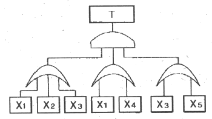
- 부품 X2
- 부품 X3
- 부품 X4
- 부품 X5
(정답률: 81%)
26. 설비보전에서 평균수리시간의 의미로 맞는 것은?
- MTTR
- MTBF
- MTTF
- MTBP
(정답률: 77%)
27. 통화이해도를 측정하는 지표로서, 각 옥타브(octave)대의 음성과 잡음의 데시벨(dB)값에 가중치를 곱하여 합계를 구하는 것을 무엇이라 하는가?
- 명료도 지수
- 통화 간섭 수준
- 이해도 점수
- 소음 기준 곡선
(정답률: 66%)
28. 일반적으로 보통 작업자의 정상적인 시선으로 가장 적합한 것은?
- 수평선을 기준으로 위쪽 5° 정도
- 수평선을 기준으로 위쪽 15° 정도
- 수평선을 기준으로 아래쪽 5° 정도
- 수평선을 기준으로 아래쪽 15° 정도
(정답률: 65%)
29. FT도에 사용되는 다음 기호의 명칭으로 옳은것은?
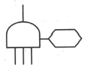
- 억제게이트
- 조합AND게이트
- 부정게이트
- 배타적OR게이트
(정답률: 65%)
30. 일반적으로 위험(Risk)은 3가지 기본요소로 표현되며 3요소(Triplets)로 정의된다. 3요소에 해당되지 않는 것은?
- 사고 시나리오(Si)
- 사고 발생 확률(Pi)
- 시스템 불이용도(Qi)
- 파급효과 또는 손실(Xi)
(정답률: 70%)
31. 다음 FT도에서 최소 컷셋을 올바르게 구한것은?
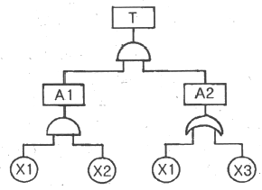
- (X1, X2)
- (X1, X3)
- (X2, X3)
- (X1, X2, X3)
(정답률: 66%)
32. 시스템이 저장되어 이동되고 실행됨에 따라 발생하는 작동시스템의 기능이나 과업, 활동으로부터 발생되는 위험에 초점을 맞춘 위험분석 차트는?
- 결함수분석(FTA: Fault Tree Analysis)
- 사상수분석(ETA: Event Tree Analysis)
- 결함위험분석(FHA: Fault Hazard Analysis)
- 운용위험분석(OHA: Operating Hazard Analysis)
(정답률: 56%)
33. 자동화시스템에서 인간의 기능으로 적절하지 않은 것은?
- 설비보전
- 작업계획 수립
- 조정 장치로 기계를 통제
- 모니터로 작업 상황 감시
(정답률: 64%)
34. 의자 설계에 대한 조건 중 틀린 것은?
- 좌판의 깊이는 작업자의 등이 등받이에 닿을수 있도록 설계한다.
- 좌판은 엉덩이가 앞으로 미끄러지지 않는 재질과 구조로 설계한다.
- 좌판의 넓이는 작은 사람에게 적합하도록, 깊이는 큰 사람에게 적합하도록 설계한다.
- 등받이는 충분한 넓이를 가지고 요추 부위부터 어깨부위까지 편안하게 지지하도록 설계한다.
(정답률: 88%)
35. 시스템 분석 및 설계에 있어서 인간공학의 가치와 가장 거리가 먼 것은?
- 훈련비용의 절감
- 인력 이용률의 향상
- 생산 및 보전의 경제성 감소
- 사고 및 오용으로부터의 손실 감소
(정답률: 74%)
36. 산업안전보건법령상 유해ㆍ위험방지계획서 제출 대상 사업은 기계 및 가구를 제외한 금속가공제품 제조업으로서 전기 계약용량이 얼마 이상인 사업을 말하는가?
- 50 kW
- 100 kW
- 200 kW
- 300 kW
(정답률: 79%)
37. 건구온도 30℃, 습구온도 35℃ 일 때의 옥스포드(Oxford) 지수는 얼마인가?
- 27.75℃
- 24.58℃
- 32.78℃
- 34.25℃
(정답률: 61%)
38. 작업자가 용이하게 기계ㆍ기구를 식별하도록 암호화(Coding)를 한다. 암호화 방법이 아닌 것은?
- 강도
- 형상
- 크기
- 색채
(정답률: 68%)
39. 반사형 없이 모든 방향으로 빛을 발하는 점광원에서 5m 떨어진 곳의 조도가 120 lux 라면 2m 떨어진 곳의 조도는?
- 150 lux
- 192.2 lux
- 750 lux
- 3000 lux
(정답률: 61%)
40. 육체작업의 생리학적 부하측정 척도가 아닌 것은 ?
- 맥박수
- 산소소비량
- 근전도
- 점멸융합주파수
(정답률: 71%)
3과목: 기계위험방지기술
41. 다음 중 드릴작업의 안전사항이 아닌 것은?
- 옷소매가 길거나 찢어진 옷은 입지 않는다.
- 작고, 길이가 긴 물건은 플라이어로 잡고 뚫는다.
- 회전하는 드릴에 걸레 등을 가까이 하지 않는다.
- 스핀들에서 드릴을 뽑아낼 때에는 드릴 아래에 손을 내밀지 않는다.
(정답률: 85%)
42. 슬라이드가 내려옴에 따라 손을 쳐내는 막대기 좌우로 왕복하면서 위험점으로부터 손을 보호하여 주는 프레스의 안전장치는?
- 손쳐내기식 방호장치
- 수인식 방호장치
- 게이트 가드식 방호방치
- 양손조작식 방호장치
(정답률: 85%)
43. 양중기(승강기를 제외한다.)를 사용하여 작업하는 운전자 또는 작업자가 보기 쉬운 곳에 해당 양중기에 대해 표시하여야 할 내용이 아닌 것은?
- 정격 하중
- 운전 속도
- 경고 표시
- 최대 인양 높이
(정답률: 62%)
44. 연삭기의 연삭숫돌을 교체했을 경우 시운전은 최소 몇 분 이상 실시해야 하는가?
- 1분
- 3분
- 5분
- 7분
(정답률: 81%)
45. 크레인 로프에 2t의 중량을 걸어 20m/s2 가속도로 감아올릴 때 로프에 걸리는 총 하중은 약 몇 kN 인가?
- 42.8
- 59.6
- 74.5
- 91.3
(정답률: 59%)
46. 산업안전보건법령에서 정하는 간이리프트의 정의에 대한 설명 중 ( ) 안에 들어갈 말로 옳은 것은?(관련 규정 개정전 문제로 여기서는 기존 정답인 3번을 누르면 정답 처리됩니다. 자세한 내용은 해설을 참고하세요.)
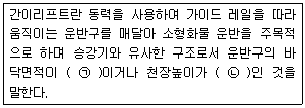
- ㉠ - 1m2 이상, ㉡ - 1.2m 이상
- ㉠ - 2m2 이상, ㉡ - 2.4m 이상
- ㉠ - 1m2 이하, ㉡ - 1.2m 이하
- ㉠ - 2m2 이하, ㉡ - 2.4m 이하
(정답률: 65%)
47. 다음 ( ) 안에 들어갈 용어로 알맞은 것은?
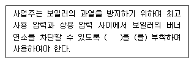
- 고저수위 조절장치
- 압력방출장치
- 압력제한스위치
- 파열판
(정답률: 73%)
48. 다음 중 금속 등의 도체에 교류를 통한 코일을 접근시켰을 때, 결함이 존재하면 코일에 유기되는 전압이나 전류가 변하는 것을 이용한 검사방법은?
- 자분탐상검사
- 초음파탐상검사
- 와류탐상검사
- 침투형광탐검사
(정답률: 72%)
49. 산업안전보건법령에서 정하는 압력용기에서 안전인증된 파열판에는 안전인증 표시 외에 추가로 나타내어야 하는 사항이 아닌 것은?
- 분출차(%)
- 호칭지름
- 용도(요구성능)
- 유체의 흐름방향 지시
(정답률: 60%)
50. 롤러기의 앞면 롤의 지름이 300 mm, 분당회전수가 30회일 경우 허용되는 급정지장치의 급정지거리는 약 몇 mm 이내이어야 하는가?
- 37.7
- 31.4
- 377
- 314
(정답률: 49%)
51. 단면적이 1800mm2인 알루미늄 봉의 파괴강도는 70 MPa이다. 안전율을 2로 하였을 때 봉에 가해질 수 있는 최대하중은 얼마인가?
- 6.3 kN
- 126 kN
- 63 kN
- 12.6 kN
(정답률: 44%)
52. 원동기, 풀리, 기어 등 근로자에게 위험을 미칠 우려가 있는 부위에 설치하는 위험방지 장치가 아닌 것은?
- 덮개
- 슬리브
- 건널다리
- 램
(정답률: 56%)
53. 아세틸렌 용접장치에서 사용하는 발생기실의 구조에 대한 요구사항으로 틀린 것은?
- 벽의 재료는 불연성의 재료를 사용할 것
- 천정과 벽은 견고한 콘크리트 구조로 할 것
- 출입구의 문은 두께 1.5mm 이상의 철판 또는 이와 동등 이상의 강도를 가진 구조로 할 것
- 바닥 면적의 16분의 1 이상의 단면적을 가진 배기통을 옥상으로 돌출시킬 것
(정답률: 59%)
54. 롤러기의 급정지장치로 사용되는 정지봉 또는 로프의 설치에 관한 설명으로 틀린 것은?
- 복부 조작식은 밑면으로부터 1200 ~ 1400 mm 이내의 높이로 설치한다.
- 손 조작식은 밑면으로부터 1800 mm 이내의 높이로 설치한다.
- 손 조작식은 앞면 롤 끝단으로부터 수평거리가 50 mm 이내에 설치한다.
- 무릎 조작식은 밑면으로부터 400 ~ 600 mm 이내의 높이로 설치한다.
(정답률: 62%)
55. 산업안전보건법령상 용접장치의 안전에 관한 준수사항 설명으로 옳은 것은?
- 아세틸렌 용접장치의 발생기실을 옥외에 설치한 때에는 그 개구부를 다른 건축물로부터 1m 이상 떨어지도록 하여야 한다.
- 가스집합장치로부터 3m 이내의 장소에서는 화기의 사용을 금지시킨다.
- 아세틸렌 발생기에서 10m이내 또는 발생기실에서 4m이내의 장소에서는 흡연행위를 금지시킨다.
- 아세틸렌 용접장치를 사용하여 용접작업을 할 경우 게이지 압력이 127kPa을 초과하는 아세틸렌을 발생시켜 사용해서는 아니 된다.
(정답률: 75%)
56. 다음 중 프레스의 방호장치에 관한 설명으로 틀린 것은?
- 양수조작식 방호장치는 1행정1정지 기구에 사용할 수 있어야 한다.
- 손쳐내기식 방호장치는 슬라이드 하행정거리의 3/4 위치에서 손을 완전히 밀어내야 한다,
- 광전자식 방호장치의 정상동작 표기램프는 붉은색, 위험 표시램프는 녹색으로 하며, 쉽게 근로자가 볼 수 있는 곳에 설치해야 한다.
- 게이트 가드 방호장치는 가드가 열린 상태에서 슬라이드를 동작시킬 수 없고 또한 슬라이드 작동 중에는 게이트 가드를 열 수 없어야 한다.
(정답률: 81%)
57. 다음 중 비파괴 시험의 종류에 해당하지 않는 것은?
- 와류 탐상시험
- 초음파 탐상시험
- 인장 시험
- 방사선 투과시험
(정답률: 84%)
58. 두께 2mm이고 치진폭이 2.5mm인 목재가공용 둥근톱에서 반발예방장치 분할날의 두께(t)로 적절한 것은?
- 2.2 mm ≦ t < 2.5mm
- 2.0 mm ≦ t < 3.5mm
- 1.5 mm ≦ t < 2.5mm
- 2.5 mm ≦ t < 3.5mm
(정답률: 62%)
59. 마찰 클러치가 부착된 프레스에 부적합한 방호장치는? (단, 방호장치는 한 가지 형식만 사용할 경우로 한정한다.)
- 양수조작식
- 광전자식
- 가드식
- 수인식
(정답률: 40%)
60. 아세틸렌용접장치 및 가스집합용접장치에서 가스의 역류 및 역화를 방지하기 위한 안전기의 형식에 속하는 것은?
- 주수식
- 침지식
- 투입식
- 수봉식
(정답률: 66%)
4과목: 전기위험방지기술
61. 정전기 발생에 영향을 주는 요인이 아닌 것은?
- 분리속도
- 물체의 질량
- 접촉면적 및 압력
- 물체의 표면상태
(정답률: 78%)
62. 입욕자에게 전기적 자극을 주기 위한 전기욕기의 전원장치에 내장되어 있는 전원 변압기의 2차측 전로의 사용전압은 몇 V 이하로 하여야 하는가?
- 10
- 15
- 30
- 60
(정답률: 39%)
63. 피뢰기의 설치장소가 아닌 것은? (단, 직접 접속하는 전선이 짧은 경우 및 피보호기기가 보호범위 내에 위치하는 경우가 아니다.)
- 저압을 공급 받는 수용장소의 인입구
- 지중전선로와 가공전선로가 접속되는 곳
- 가공전선로에 접속하는 배전용 변압기의 고압측
- 발전소 또는 변전소의 가공전선 인입구 및 인출구
(정답률: 73%)
64. 저압방폭구조 배선 중 노출 도전성 부분의 보호 접지선으로 알맞은 항목은?
- 전선관이 충분한 지락전류를 흐르게 할 시에도 결합부에 본딩(bonding)을 해야 한다.
- 전선관이 최대지락전류를 안전하게 흐르게 할 시 접지선으로 이용 가능하다.
- 접지선의 전선 또는 선심은 그 절연피복을 흰색 또는 검정색을 사용한다.
- 접지선은 1000V 비닐절연전선 이상 성능을 갖는 전선을 사용한다.
(정답률: 47%)
65. 방폭전기설비의 용기내부에서 폭발성가스 또는 증기가 폭발하였을 때 용기가 그 압력에 견디고 접합면이나 개구부를 통해서 외부의 폭발성 가스나 증기에 인화되지 않도록 항 방폭구조는?
- 내압 방폭구조
- 압력 방폭구조
- 유입 방폭구조
- 본질안전 방폭구조
(정답률: 79%)
66. 전기시설의 직접 접촉에 의한 감전방지 방법으로 적절하지 않은 것은?
- 충전부는 내구성이 있는 절연물로 완전히 덮어 감쌀 것
- 충전부가 노출되지 않도록 폐쇄형 외함이 있는 구조로 할 것
- 충전부에 충분한 절연효과가 있는 방호망 또는 절연 덮개를 설치할 것
- 충전부는 관계자 외 출입이 용이한 전개된 장소에 설치하고 위험표시 등의 방법으로 방호를 강화할 것
(정답률: 80%)
67. 누전화재가 발생하기 전에 나타나는 현상으로 거리가 가장 먼 것은?
- 인체 감전현상
- 전등 밝기의 변화현상
- 빈번한 퓨즈 용단현상
- 전기 사용 기계장치의 오동작 감소
(정답률: 75%)
68. 인체에 최소감지 전류에 대한 설명으로 알맞은 것은?
- 인체가 고통을 느끼는 전류이다.
- 성인 남자의 경우 상용주파수 60Hz 교류에서 약 1mA이다.
- 직류를 기준으로 한 값이며, 성인남자의 경우 약 1mA에서 느낄 수 있는 전류이다.
- 직류를 기준으로 여자의 경우 성인 남자의 70%인 0.7mA에서 느낄 수 있는 전류의 크기를 말한다.
(정답률: 54%)
69. 그림에서 인체의 허용 접촉 전압은 약 몇 V 인가? (단, 심실세동 전류는
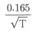
이며, 인체저항 Rk= 1000Ω, 발의 저항 Rf= 300Ω이고, 접촉 시간은 1초로 한다.)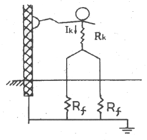
- 107
- 132
- 190
- 215
(정답률: 38%)
70. 교류아크 용접기에 전격 방지기를 설치하는 요령 중 틀린 것은?
- 이완 방지 조치를 한다.
- 직각으로만 부착해야 한다.
- 동작 상태를 알기 쉬운 곳에 설치한다.
- 테스트 스위치는 조작이 용이한 곳에 위치시킨다.
(정답률: 79%)
71. 피뢰침의 제한전압이 800kV, 충격절연강도가 1000kV라 할 때, 보호여유도는 몇 % 인가?
- 25
- 33
- 47
- 63
(정답률: 70%)
72. 물질의 접촉과 분리에 따른 정전기 발생량의 정도를 나타낸 것으로 틀린 것은?
- 표면이 오염될수록 크다.
- 분리속도가 빠를수록 크다.
- 대전서열이 서로 멀수록 크다.
- 접촉과 분리가 반복될수록 크다.
(정답률: 54%)
73. 감전 재해자가 발생하였을 때 취하여야 할 최우선 조치는? (단, 감전자가 질식상태라 가정함.)
- 부상 부위를 치료한다.
- 심폐소생술을 실시한다.
- 의사의 왕진을 요청한다.
- 우선 병원으로 이동시킨다.
(정답률: 83%)
74. 방폭지역 0종 장소로 결정해야 할 곳으로 틀린 것은?
- 인화성 또는 가연성 가스가 장기간 체류하는 곳
- 인화성 또는 가연성 물질을 취급하는 설비의 내부
- 인화성 또는 가연성 액체가 존재하는 피트등의 내부
- 인화성 또는 가연성 증기의 순환통로를 설치한 내부
(정답률: 60%)
75. 인체에 미치는 전격 재해의 위험을 결정하는 주된 인자 중 가장 거리가 먼 것은?
- 통전전압의 크기
- 통전전류의 크기
- 통전경로
- 통전시간
(정답률: 71%)
76. 방전의 분류에 속하지 않는 것은?
- 연면 방전
- 불꽃 방전
- 코로나 방전
- 스프레이 방전
(정답률: 69%)
77. 정전용량 C=20 μF, 방전 시 전압 V=2kV 일 때 정전에너지는 몇 J 인가?
- 40
- 80
- 400
- 800
(정답률: 66%)
78. 접지 저항치를 결정하는 저항이 아닌 것은?
- 접지선, 접지극의 도체저항
- 접지전극과 주회로 사이의 낮은 절연저항
- 접지전극 주위의 토양이 나타내는 저항
- 접지전극의 표면과 접하는 토양사이의 접촉저항
(정답률: 57%)
79. 작업장소 중 제전복을 착용하지 않아도 되는 장소는?
- 상대 습도가 높은 장소
- 분진이 발생하기 쉬운 장소
- LCD등 display 제조 작업 장소
- 반도체 등 전기소자 취급 작업 장소
(정답률: 73%)
80. 방폭지역에서 저압케이블 공사 시 사용해서는 안 되는 케이블은?
- MI 케이블
- 연피 케이블
- 0.6/1kV 고무캡타이어 케이블
- 0.6/1kV 폴리에틸렌 외장케이블
(정답률: 51%)
5과목: 화학설비위험방지기술
81. 화재 감지에 있어서 열감지 방식 중 차동식에 해당하지 않는 것은?
- 공기관식
- 열전대식
- 바이메탈식
- 열반도체식
(정답률: 59%)
82. 각 물질(A~D)의 폭발상한계와 하한계가 다음 [표]와 같을 때 다음 중 위험도가 가장 큰 물질은?
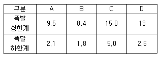
- A
- B
- C
- D
(정답률: 67%)
83. NH4NO3 의 가열, 분해로부터 생성되는 무색의 가스로 일명 웃음가스라고도 하는 것은?
- N2O
- NO2
- N2O4
- NO
(정답률: 57%)
84. 다음 중 분진 폭발의 특징으로 옳은 것은?
- 가스폭발보다 연소시간이 짧고, 발생 에너지가 작다.
- 압력의 파급속도보다 화염의 파급속도가 빠르다.
- 가스폭발에 비하여 불완전 연소가 적게 발생한다.
- 주위의 분진에 의해 2차, 3차의 폭발로 파급될 수 있다.
(정답률: 77%)
85. 자연 발화성을 가진 물질이 자연발열을 일으키는 원인으로 거리가 먼 것은?
- 분해열
- 증발열
- 산화열
- 중합열
(정답률: 40%)
86. 다음 중 누설 발화형 폭발재해의 예방 대책으로 가장 거리가 먼 것은?
- 발화원 관리
- 밸브의 오동작 방지
- 가연성 가스의 연소
- 누설물질의 검지 경보
(정답률: 71%)
87. 다음 중 최소발화에너지(E[J])를 구하는 식으로 옳은 것은? (단, I는 전류[A]. R 은 저항[Ω], V는 전압[V], C는 콘덴서용량[F], T는 시간[초]이라 한다.)
- E=I2RT
- E=0.24I2RT
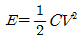
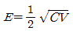
(정답률: 77%)
88. 다음 중 분진 폭발을 일으킬 위험이 가장 높은 물질은?
- 염소
- 마그네슘
- 산화칼슘
- 에틸렌
(정답률: 72%)
89. 사업주는 특수산화설비를 설치할 때 내부의 이상상태를 조기에 파악하기 위하여 필요한 계측장치를 설치하여야 한다. 다음 중 이에 해당하는 특수화학설비가 아닌 것은?
- 발열 반응이 일어나는 반응장치
- 증류, 증발 등 분리를 행하는 장치
- 가열로 또는 가열기
- 액체의 누설을 방지하는 방유장치
(정답률: 53%)
90. 가스 또는 분진 폭발 위험장소에 설치되는 건축물의 내화 구조로 설명한 것으로 틀린 것은?
- 건축물 기둥 및 보는 지상 층까지 내화구조로 한다.
- 위험물 저장ㆍ취급용기의 지지대는 지상으로부터 지지대의 끝부분까지 내화구조로 한다.
- 건축물 주변에 자동소화설비를 설치한 경우 건축물 화재 시 1시간 이상 그 안전성을 유지한 경우는 내화구조로 하지 아니할 수 있다.
- 배관ㆍ전선관 등의 지지대는 지상으로부터 1단까지 내화구조로 한다.
(정답률: 74%)
91. 고압가스의 분류 중 압축가스에 해당되는 것은?
- 질소
- 프로판
- 산화에틸렌
- 염소
(정답률: 59%)
92. 건조설비를 사용하여 작업을 하는 경우에 폭발이나 화재를 예방하기 위하여 준수하여야 하는 사항으로 틀린 것은?
- 위험물 건조설비를 사용하는 경우에는 미리 내부를 청소하거나 환기할 것
- 위험물 건조설비를 사용하여 가열건조하는 건조물은 쉽게 이탈되도록 할 것
- 고온으로 가열건조한 인화성 액체는 발화의 위험이 없는 온도로 냉각한 후에 격납시킬 것
- 바깥 면이 현저히 고온이 되는 건조설비에 가까운 장소에는 인화성 액체를 두지 않도록 할 것
(정답률: 82%)
93. 트리에틸알루미늄에 화재가 발생하였을 때 다음 중 가장 적합한 소화약제는?
- 팽창질석
- 할로겐화합물
- 이산화탄소
- 물
(정답률: 58%)
94. 액화 프로판 310kg 을 내용적 50L 용기에 충전할 때 필요한 소요 용기의 수는 몇 개인가? (단, 액화 프로판의 가스정수는 2.35 이다.)
- 15
- 17
- 19
- 21
(정답률: 58%)
95. 산업안전보건법령상 위험물질의 종류와 해당물질의 연결이 옳은 것은?
- 폭발성 물질 : 마그네슘분말
- 인화성 고체 : 중크롬산
- 산화성 물질 : 니트로소화합물
- 인화성 가스 : 에탄
(정답률: 39%)
96. 다음 가스 중 가장 독성이 큰 것은?
- CO
- COCl2
- NH3
- H2
(정답률: 77%)
97. 가연성 기체의 분출 화재 시 주 공급밸브를 닫아서 연료공급을 차단하여 소화하는 방법은?
- 제거소화
- 냉각소화
- 희석소화
- 억제소화
(정답률: 62%)
98. 다음 중 산업안전보건법령상 물질안전보건자료의 작성ㆍ비치 제외 대상이 아닌 것은?
- 원자력법에 의한 방사성 물질
- 농약관리법에 의한 농약
- 비료관리법에 의한 비료
- 관세법에 의해 수입되는 공업용 유기용제
(정답률: 62%)
99. 다음 중 산업안전보건법령상 화학설비의 부속설비로만 이루어진 것은?
- 사이클론, 백필터. 전기집진기 등 분진처리설비
- 응축기, 냉각기, 가열기, 증발기 등 열교환기류
- 고로 등 점화기를 직접 사용하는 열교환기류
- 혼합기, 발포기. 압출기 등 화학제품 가공설비
(정답률: 65%)
100. 증류탑에서 포종탑내에 설치되어 있는 포종의 주요 역할로 옳은 것은?
- 압력을 증가시켜주는 역할
- 탑내 액체를 이송하는 역할
- 화학적 반응을 시켜주는 역할
- 증기와 액체의 접촉을 용이하게 해주는 역할
(정답률: 66%)
6과목: 건설안전기술
101. 작업발판 및 통로의 끝이나 개구부로서 근로자가 추락할 위험이 있는 장소에서 난간등의 설치가 매우 곤란하거나 작업의 필요상 임시로 난간등을 해체하여야 하는 경우에 설치하여야 하는 것은?(관련 규정 개정전 문제로 여기서는 기존 정답인 3번을 누르면 정답 처리됩니다. 자세한 내용은 해설을 참고하세요.)
- 구명구
- 수직보호망
- 안전방망
- 석면포
(정답률: 74%)
102. 지반조사의 목적에 해당되지 않는 것은?
- 토질의 성질 파악
- 지층의 분포 파악
- 지하수위 및 피압수 파악
- 구조물의 편심에 의한 적절한 침하 유도
(정답률: 73%)
103. 풍화암의 굴착면 붕괴에 따른 재해를 예방하기 위한 굴착면의 적정한 기울기 기준은?(관련 규정 개정전 문제로 여기서는 기존 정답인 2번을 누르면 정답 처리됩니다. 자세한 내용은 해설을 참고하세요.)
- 1 : 1
- 1 : 0.8
- 1 : 0.5
- 1 : 0.3
(정답률: 72%)
104. 크레인 등 건설장비의 가공전선로 접근 시 안전대책으로 거리가 먼 것은?
- 안전 이격거리를 유지하고 작업한다.
- 장비의 조립, 준비시부터 가공전선로에 대한 감전 방지 수단을 강구한다.
- 장비 사용 현장의 장애물, 위험물 등을 점검 후 작업계획을 수립한다.
- 장비를 가공전선로 밑에 보관한다.
(정답률: 82%)
1⑤. 다음 중 차량계 건설기계에 속하지 않는 것은?
- 불도저
- 스크레이퍼
- 타워크레인
- 항타기
(정답률: 50%)
106. 산업안전보건관리비 계상 및 사용기준에 따른 공사 종류별 계상기준으로 옳은 것은? (단, 철도ㆍ궤도신설공사이고, 대상액이 5억원 미만인 경우)
- 1.85%
- 2.45%
- 3.09%
- 3.43%
(정답률: 45%)
107. 건설공사 시공단계에 있어서 안전관리의 문제점에 해당되는 것은?
- 발주자의 조사, 설계 발주능력 미흡
- 용역자의 조사, 설계능력 부실
- 발주자의 감독 소홀
- 사용자의 시설 운영관리 능력 부족
(정답률: 63%)
108. 유해위험방지 계획서를 제출하려고 할 때 그 첨부서류와 가장 거리가 먼 것은?
- 공사개요서
- 산업안전보건관리비 작성요령
- 전체공정표
- 재해 발생 위험 시 연락 및 대피방법
(정답률: 68%)
109. 흙막이 지보공을 설치하였을 때 정기적으로 점검하여 이상 발견 시 즉시 보수하여야 할 사항이 아닌 것은?
- 굴착 깊이의 정도
- 버팀대의 긴압의 정도
- 부재의 접속부ㆍ부착부 및 교차부의 상태
- 부재의 손상ㆍ변형ㆍ부식ㆍ변위 및 탈락의 유무와 상태
(정답률: 70%)
110. 크레인의 운전실 또는 운전대를 통하는 통로의 끝과 건설물 등의 벽체의 간격은 최대 얼마 이하로 하여야 하는가?
- 0.2m
- 0.3m
- 0.4m
- 0.5m
(정답률: 64%)
111. 달비계를 설치할 때 작업발판의 폭은 최소 얼마 이상으로 하여야 하는가?
- 30cm
- 40cm
- 50cm
- 60cm
(정답률: 68%)
112. 산소결핍이라 함은 공기 중 산소농도가 몇 퍼센트(%) 미만일 때를 의미하는가?
- 20%
- 18%
- 15%
- 10%
(정답률: 78%)
113. 크레인을 사용하여 작업을 할 때 작업시작 전에 점검하여야 하는 사항에 해당하지 않는 것은?
- 권과방지장치ㆍ브레이크ㆍ클러치 및 운전장치의 기능
- 주행로의 상측 및 트롤리가 횡행하는 레일의 상태
- 와이어로프가 통하고 있는 곳의 상태
- 압력방출방치의 기능
(정답률: 76%)
114. 흙막이 공법을 흙막이 지지방식에 의한 분류와 구조방식에 의한 분류로 나눌 때 다음 중 지지방식에 의한 분류에 해당하는 것은?
- 수평 버팀대식 흙막이 공법
- H-Pile 공법
- 지하연속벽 공법
- Top down method 공법
(정답률: 71%)
115. 그물코의 크기가 10cm 인 매듭없는 방망사신품의 인장강도는 최소 얼마 이상이어야 하는가?
- 240 kg
- 320 kg
- 400 kg
- 500 kg
(정답률: 73%)
116. 항타기 및 항발기에 관한 설명으로 옳지 않은 것은?
- 도괴방지를 위해 시설 또는 가설물 등에 설치하는 때에는 그 내력을 확인하고 내력이 부족하면 그 내력을 보강해야 한다.
- 와이어로프의 한 꼬임에서 끊어진 소선(필러선을 제외한다)의 수가 10% 이상인 것은 권상용 와이어로프로 사용을 금한다.
- 지름 감소가 공칭지름의 7%를 초과하는 것은 권상용 와이어로프로 사용을 금한다.
- 권상용 와이어로프의 안전계수가 4이상이 아니면 이를 사용하여서는 아니 된다.
(정답률: 70%)
117. 굴착과 싣기를 동시에 할 수 있는 토공기계가 아닌 것은?
- Power shovel
- Tractor shovel
- Back hoe
- Motor grader
(정답률: 72%)
118. 다음은 강관을 사용하여 비계를 구성하는 경우에 대한 내용이다. 다음 ( )안에 들어갈 내용으로 옳은 것은?(관련 규정 개정전 문제로 여기서는 기존 정답인 3번을 누르면 정답 처리됩니다. 자세한 내용은 해설을 참고하세요.)
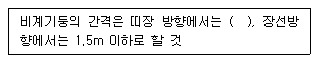
- 1.2m 이상 1.5m 이하
- 1.2m 이상 2.0m 이하
- 1.5m 이상 1.8m 이하
- 1.5m 이상 2.0m 이하
(정답률: 72%)
119. 콘크리트 타설 시 거푸집의 측압에 영향을 미치는 인자들에 관한 설명으로 옳지 않은 것은?
- 슬럼프가 클수록 작다.
- 타설속도가 빠를수록 크다.
- 거푸집 속의 콘크리트 온도가 낮을수록 크다.
- 콘크리트의 타설높이가 높을수록 크다.
(정답률: 61%)
120. 흙의 투수계수에 영향을 주는 인자에 관한 설명으로 옳지 않은 것은?
- 공극비 : 공극비가 클수록 투수계수는 작다.
- 포화도 : 포화도가 클수록 투수계수도 크다.
- 유체의 점성계수 : 점성계수가 클수록 투수계수는 작다.
- 유체의 밀도 : 유체의 밀도가 클수록 투수계수는 크다.
(정답률: 58%)